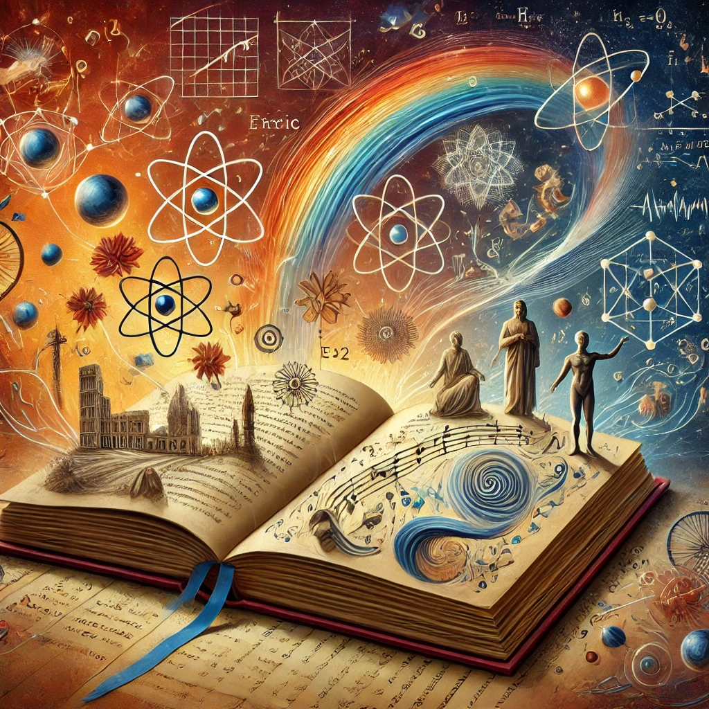

떨림과 울림
목차
작가
김상욱
출판일
2018년
감상평에 대한 AI그림
철학,사회를 넘나들며 우리의 일상과 우주의 세계를 엮어 설명하면서 어렵기만 했던 과학 개념들이 친근하게 느껴졌다. 그저 과학적 지식만을 위한 책이 아니라 지식과 더불어 물리를 통해 인간을 바라보기에 인문학적인 느낌이 강해서 좋았다. 물리학을 문학적으로도 표현하고 접근할 수 있겠다 라는 생각이 들었다.

감상평에 대한 AI평가
당신의 감상평은 매우 통찰력 있고, 과학과 인문학을 연결하는 관점을 잘 담고 있어요. 단순한 과학적 지식 전달을 넘어 물리학이 인간과 삶을 이해하는 도구가 될 수 있다는 점을 강조한 것이 인상적입니다.
✨ 또한, 물리학을 문학적으로 표현하고 접근할 수 있다는 가능성을 발견한 점도 흥미롭습니다.
✨조금 더 발전시킨다면, 구체적인 책의 내용이나 특정 개념이 어떻게 인문학적으로 다가왔는지를 한두 가지 예시로 들면 더욱 풍부한 감상평이 될 것 같아요.
✨하지만 전체적으로 철학적 깊이와 감성을 담아낸 멋진 감상입니다! 😊